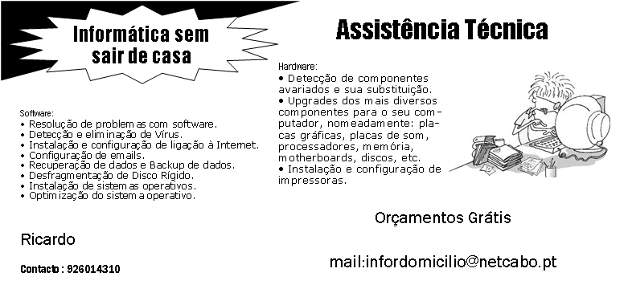

Équipements et systèmes
Diagnostic, entretien, réparation et mises à niveau des ordinateurs portables et de bureau. Configuration des systèmes, applications et périphériques selon la compatibilité et les besoins du client.


La technologie, avec un accompagnement de proximité
Plus de 25 ans d’expérience nous ont appris qu’une bonne assistance commence par la compréhension du client. Nous écoutons les symptômes, évaluons l’appareil et expliquons les options afin que chaque décision soit éclairée et qu’aucun travail ne soit effectué sans accord. Nous privilégions l’entretien, la compatibilité des composants et les solutions proportionnées aux besoins réels plutôt que les remplacements inutiles.
Diagnostic, entretien, réparation et mises à niveau des ordinateurs portables et de bureau. Configuration des systèmes, applications et périphériques selon la compatibilité et les besoins du client.
Assistance réseau et Wi-Fi, migration des fichiers et organisation des sauvegardes. Chaque solution est évaluée selon les équipements et leurs usages.
Nous expliquons les options et les conditions avant d’intervenir. L’accès aux données et les sessions à distance sont convenus avec le client.
Infordomicilio propose une assistance à domicile sur rendez-vous et à distance lorsque cela convient. L’activité est exercée à titre individuel, sans magasin ouvert au public.
Demander une assistanceInforDomicílio est née d’une idée simple : apporter l’assistance informatique chez les gens, sans qu’ils aient à se déplacer. C’était le point de départ et cela reste la base de notre travail.
Le premier dépliant présentait l’assistance technique à domicile dans deux domaines. Logiciel : résolution de problèmes, détection et suppression de virus, configuration d’Internet et du courrier, récupération de données et sauvegardes, défragmentation du disque, installation et optimisation de systèmes d’exploitation. Matériel : remplacement de composants défectueux, mises à niveau, installation et configuration d’imprimantes.
En plus de 25 ans d’expérience, notre travail a suivi l’évolution de la technologie et les besoins des clients. Aujourd’hui, outre l’assistance à domicile, le service comprend l’assistance à distance, les réseaux et le Wi-Fi, la sécurité et les sauvegardes, ainsi que la création de sites web.
Notre façon de travailler reste la même : écouter le client, expliquer les options et n’avancer qu’avec son accord.
Logiciel, matériel et imprimantes, avec intervention à domicile.
Domicile et assistance à distance, réseaux, sécurité, sauvegardes et création de sites web.



Les contacts et conditions actuels sont ceux de ce site ; les mentions de devis gratuits et l’ancienne adresse e-mail dans les images ne remplacent pas les conditions convenues pour chaque demande. Survolez pour agrandir.
Marques d’équipements, composants et logiciels avec lesquelles nous travaillons
Les noms et logos appartiennent à leurs propriétaires et n’impliquent ni partenariat ni affiliation.